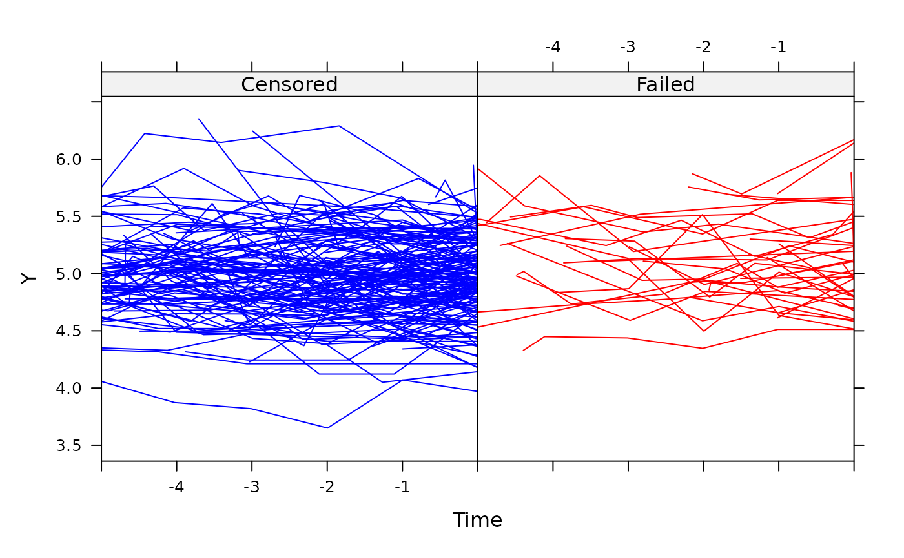

This function views the longitudinal profile of each unit with the last longitudinal measurement prior to event-time (censored or not) taken as the end-point, referred to as time zero. In doing so, the shape of the profile prior to event-time can be inspected. This can be done over a user-specified number of time units.
Usage
jointplot(
object,
Y.col,
Cens.col,
lag,
split = TRUE,
col1,
col2,
xlab,
ylab,
gp1lab,
gp2lab,
smooth = 2/3,
mean.profile = FALSE,
mcol1,
mcol2
)Arguments
- object
an object of class
jointdata.- Y.col
an element of class
characteridentifying the longitudinal response part of thejointdataobject.- Cens.col
an element of class
characteridentifying the survival status or censoring indicator part of thejointdataobject.- lag
argument which specifies how many units in time we look back through. Defaults to the maximum observation time across all units.
- split
logical argument which allows the profiles of units which fail and those which are censored to be viewed in separate panels of the same graph. This is the default option. Using
split = FALSEwill plot all profiles overlaid on a single plot.- col1
argument to choose the colour for the profiles of the censored units.
- col2
argument to choose the colour for the profiles of the failed units.
- xlab
an element of class
characterindicating the title for the x-axis.- ylab
an element of class
characterindicating the title for the y-axis.- gp1lab
an element of class
characterfor the group corresponding to a censoring indicator of zero. Typically, the censored group.- gp2lab
an element of class
characterfor the group corresponding to a censoring indicator of one. Typically, the group experiencing the event of interest.- smooth
the smoother span. This gives the proportion of points in the plot which influence the smooth at each value. Defaults to a value of 2/3. Larger values give more smoothness. See
lowessfor further details.- mean.profile
draw mean profiles if TRUE. Only applies to the
split = TRUEcase.- mcol1
argument to choose the colour for the mean profile of the units with a censoring indicator of zero.
- mcol2
argument to choose the colour for the mean profile of the units with a censoring indicator of one.
Details
The function tailors the xyplot function to
produce a representation of joint data with longitudinal and survival
components.
Note
If more than one cause of failure is present (i.e. competing risks data), then all failures are pooled together into a single failure type.
References
Wulfsohn MS, Tsiatis AA. A joint model for survival and longitudinal data measured with error. Biometrics. 1997; 53(1): 330-339.
Examples
data(heart.valve)
heart.surv <- UniqueVariables(heart.valve,
var.col = c("fuyrs", "status"),
id.col = "num")
heart.long <- heart.valve[, c("num", "time", "log.lvmi")]
heart.cov <- UniqueVariables(heart.valve,
c("age", "sex"),
id.col = "num")
heart.valve.jd <- jointdata(longitudinal = heart.long,
baseline = heart.cov,
survival = heart.surv,
id.col = "num",
time.col = "time")
jointplot(heart.valve.jd, Y.col = "log.lvmi",
Cens.col = "status", lag = 5)
